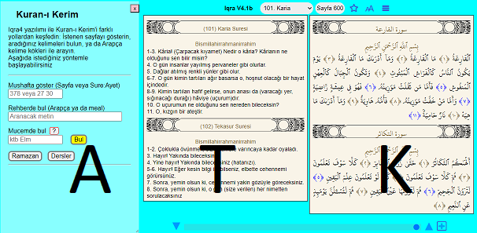

Iqra, Kerim Kitabımız Kuran’ı okumak için yapılan yüzlerce yazılımdan biridir. Bunu diğer yazılımlardan ayrılan temel özellikler: Kelime kökünü Kuran metni üzerinde belirtmesi, bir kelimenin Kuran-ı Kerim'de geçtiği tüm sayfaları tek bir ekranda göstermesi ve internetsiz ortamda çalışabilmesidir.
Ezber ve tilavet kolaylığı açısından, standart Mushaf sayfalarını kullandık.
Yazılımın başlangıç linki:
https://okuyun.org
Tanıtım videoları:
https://okuyun.org/video.html
Başlangıç sayfası, yan tutulan telefon ekranında şöyle görünür:
Mushaf açılınca, ekran yeteri kadar geniş ise hem Kuran sayfası hem de meali görünür. İkisi bir arada sığmıyorsa sadece biri gösterilir (Bk: Paneller) Mushaf açıkken, sonraki ya da önceki sayfaya geçmek, başka bir sure, cüz, ayet ya da sayfa numarası vermek mümkün.

Bütün arama işlemleri, başlangıç sayfasına benzeyen bu diyalogdaki tek kutuya bilgi girerek yönetilir. Girilen bilgiye bakarak, hangi türden bir arama ya da navigasyon gerektiğine yazılım kendisi karar verir. Yine bu diyalogda, mikrofona söylenen kelimeleri aratmak mümkün. Sesli arama sadece Arapça metin için geçerli.
Başlangıç linkinde sayfa ya da ayet numaraları belirtilebilir:

Bu resimde, sayfa menüsü, tıklanan kelime bilgisi, ayrıca 25. ayette secde ayetleri için kullanılan işaret görülüyor.
Sağ üstte görünen butonların anlamı:
Arapça kelimelerin kökü ve anlamı, bilgisayarda mouse ile kelimeye tıklayarak, mobilde dokunarak bulunur. Arama panelinde (Mucem veya Rehber) bulunan ayetler ve kelimeler bu panelde renkli gösterilir. Dar ekranlara hem ayet hem de meal sütunları bir arada sığmaz, ayetler ile meal arasındaki geçiş için T menüsü (ya da ekran kaydırma) gerekiyor. Fontlar ekran genişliği ile orantılı olduğundan, telefonu yan tutmak daha iyi görüntü verecektir.
Bu resimde, iki kelime seçildikten sonra bağlam menüsü görülüyor.
Bağlam menüsü için: mouse varsa sağ-tıklayın, yoksa kelimeye uzunca basın, ya da iki parmakla dokunun. Seçilen metin panoya kopyalanır ya da arama modüllerine gönderilir.
Yazılım üç türlü aramayı destekliyor:
Arapça metin ya da Türkçe-İngilizce meal içinde düz metin aramak için Abdurrahman Rajab tarafından bitirme projesi olarak sunuldu (Bitiş tarihi: 2020 Haziran)
 Resim 3. Rehber
Resim 3. Rehber
Sağdaki Mushaf penceresinde 47. sayfada “indallah” kelimesi seçilmiş. Bağlam menüsünden Rehber penceresine kolayca geçebiliriz. Ayet numarasına ya da bulunan renkli metne basarak Mushafa dönmek ya da menüden dış yazılıma geçmek mümkün.
 Panel genişliğini değiştirmek için çift okun olduğu noktayı kaydırın
Panel genişliğini değiştirmek için çift okun olduğu noktayı kaydırın
Arapça-Türkçe-İngilizce sesli arama özelliği eklendi (Ayrıntılar Rehber sayfasında)
Mucem yöntemi ise, seçilen Arapça kelimelerin köküne bağlı çalışıyor. Bu yöntem, Kuran dilini bilenler ya da öğrenmek isteyenler için tasarlandı. Sayfada görülen 604 kutunun herbiri Kuran’dan bir sayfa. Aranan kök beyaz sayfalarda hiç yok. Her kutunun rengi, ilgili sayfada bulunan kelime sayısı ile orantılı. Ayrıntılar ilgili sayfada

Ayetlerin benzerliği konusunda birkaç örnek şu sayfada verilmişti. Acaba bunun gibi benzerlikleri otomatik olarak bulmak mümkün mü? Cevap evet, benzerlik modülü ile birden fazla benzer kelime içeren ayetleri bulmak mümkün:

Örnek olarak alınan sayfada, numarası mavi renkli olan üç ayet var. Mesela gösterilen 30. ayet için, üç farklı ayet benzer bulunmuş. Bu ayette geçen besmele, elbette Kitab'ın ilk ayeti ile aynı. Mucem'de olduğu gibi, benzerlik modülü de Arapça kelime kökleri ile çalıştığı için, sadece Arapça metinde kullanılır, mealler için benzerlik modülü henüz yok.
PWA (Progressive web application) olduğu için taşıdığı özellikler:
Aşağıdaki örnekler üstünde yazılımın yeteneklerini özetleyelim:
Paneller – Arama, Tercüme, KuranYazılımın en bariz özelliği, üç panelli tasarım:

Üç paneli üç harfle gösterelim:
A: Arama, T: Tercüme (meal), K: Kuran
Arama paneline bakıldığında şu sayfalardan yalnız biri görünür: Başlangıç, Rehber, Mucem, Konular, Notlar, Yıldızlar, Kitap... (Kitap sayfaları çevrimdışı çalışmaz)
Ekran yeteri kadar geniş ise üç panel aynı anda gösterilir. Diz-üstü bilgisayara iki, telefona yalnız bir panel sığacaktır. Bu durumda, paneller arası geçiş için pembe butonlar ya da ekran kaydırma (swipe) kullanılır.
Mucem-Mushaf Geçişi

Mucem: Gösterilen ktb (kef-tâ-bâ) kökünün muhtelif türevleri 319 kere, 205 sayfada geçiyor. Resimde seçilen 59. sayfada 6 kere, daha açık renkli sayfalarda ise daha az sayıda... Arama konusu ayetleri, sarı kutuya tıklayarak Mushaf sayfasında okuyabiliriz. (Dış kaynaklarda okumak için ayrıca bağlam menüsü var) Sağ alt köşedeki Corpus linkinden kullandığımız referans sayfaya ulaşılır.
Mushaf: Açık olan 59. sayfada "ktb" kökünden türeyen 6 kelime mavi işaretli. Mushafta bir kelime seçtikten sonra, bağlam menüsünden Mucem ve Rehber arama yöntemlerine geçilebilir. Benzer ayetleri aramak ayet menüsüne eklenecek.

Mushaf: Açık olan 382. sayfada “metâ hâzâ” kelimeleri seçilmiş. Bağlam menüsünden Rehber penceresine kolayca geçebiliriz.
Rehber: Resimde “metâ hâzâ” harf dizisinin bulunduğu ayetler görülüyor. Ayet numarasına ya da bulunan renkli metne basarak Mushafa dönmek ya da menüden dış yazılıma geçmek mümkün.
Kuran-ı Kerim tilavetinde, birbirine benzeyen ayetlere rastlanır. Bir ayeti diğeri ile açıklamak için, benzer ayetler arasında hızlıca geçmek, hepsini bir arada görmek gerekiyor.
* Arapça kelimelerin köklerini göstermesi
* internetten bağımsız çalışması
* yeni sürümleri otomatik indirmesi
Her kelimenin hangi ayetlerde geçtiğini gösteren bir fihrist
corpus.quran.com (GNU License is included below)
Her sayfa bir kutu, her cüz bir satır
Medine mushafını seçmemizin üç sebebi var:
* Tecvid işaretleri okumayı kolaylaştırıyor
* En yaygın uluslararası yazım şekli
* Farklı kıraat rivayetlerine uygun

(C) 1992, 2012, 2019 by M Akif Eyler
Copied using GNU License